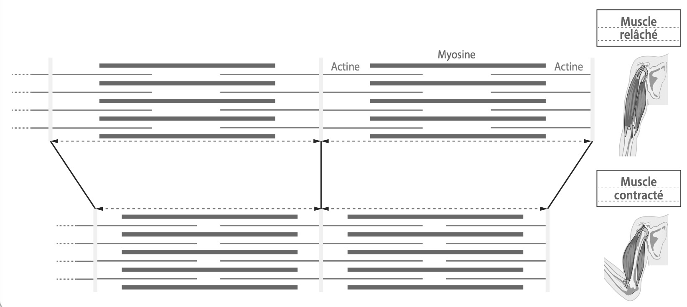

ACTIVITÉ 2 : La contraction du muscle strié squelettique
À l'aide du document 4 :
Doc 4 : Les myofibrilles, acteurs de la contraction du muscle
Les myofibrilles constituant les fibres musculaires sont une succession de petites unités composées de filaments d’actine et de myosine. Lorsque le cerveau envoie le message nerveux ordonnant le mouvement (la contraction du muscle), les filaments d’actine glissent le long des filaments de myosine, ce qui engendre la réduction de la taille des myofibrilles, par enchaînement le muscle gonfle et se raccourcit.

Question 1
Identifier le muscle contracté et le muscle relâché en légendant les deux illustrations du schéma.
C1
Regarde le schéma en bas à droite (les muscles dessinés) :
| Le muscle du HAUT (fin) | Le muscle du BAS (bombé) |
|---|---|
Question 2
Relever la modification du biceps lors de la contraction musculaire.
C1
Question 3
Présenter les mécanismes de la contraction et du relâchement musculaire en reliant les éléments correspondants.
C3
Choisis la suite logique dans les menus déroulants :
| Modification des myofibrilles | Modification du muscle | Conséquences |
|---|---|---|
| Les filaments d'actine glissent le long des filaments de myosine. | ||
| Les filaments d'actine reprennent leur position d'origine. |